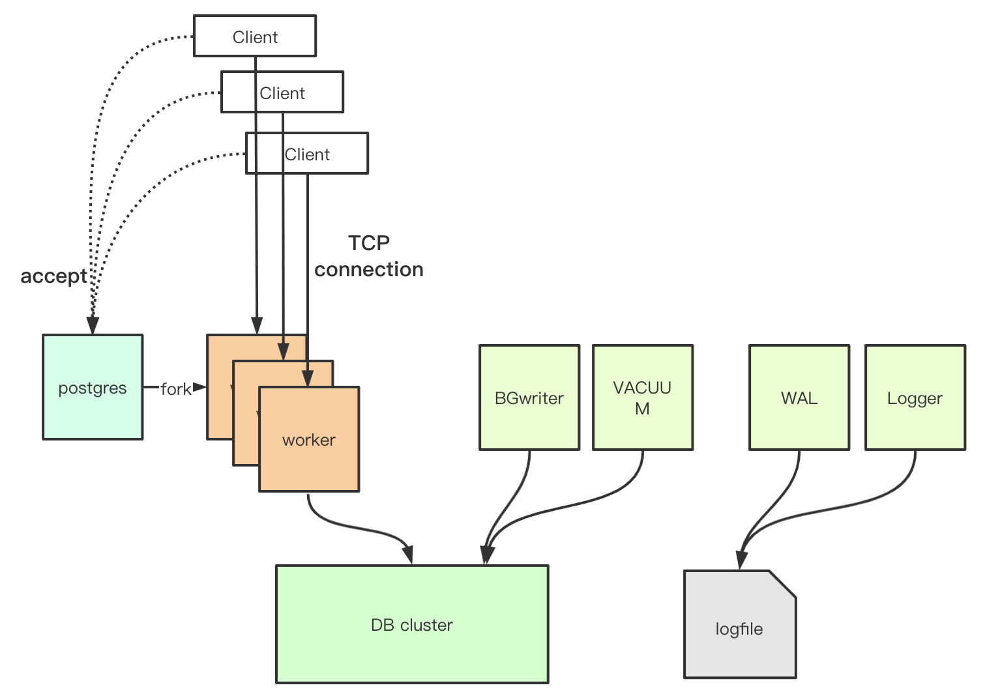

A general view
PostgreSQL is the most advanced Relation Database Management System around the world. It’s a huge system with many complex features. To understand the internal mechanism of PostgreSQL must be a chalange. Let’s start from something much easy to get a whole picture of the system.
In this post, I will explain:
- how PostgreSQL works;
- the process architecture;
- the system layers;
PostgrepSQL works as multi-processes: 1 master process, several helper processes and worker processes respective to every client.

All processes are single thread. If you know some services use async io such as nginx and redis, which are epoll driven on Linux implementation, that PostgreSQL use multi-process architecture must beyond your expectation. Actially, this makes sence, for PostgreSQL is heavy on both disk IO and computing, it might take a long time to finish just one query, async io do not allow one job takes such long time or other users be affected.
When a client comes, the master process (named as “postgres”) just accept the connection and produce a new socket corresponding. Then the master process call Linux fork() to create a new worker process, which takes care on the new socket and serves this client ever since. And the worker process quits whenever some error occurs or the client close the connection.
All worker processes, helper processes like BGWriter, Vacuum, Logger, access to the Database files concurrently. In this context of PostgreSQL we call the databases as DB cluster, and we call the tables as relations.
- Post title：The general architecture of postgreSQL(1)
- Post author：Alven Darthy
- Create time：2021-04-04 18:42:57
- Post link：http:/thinkindb.com/2021/04/04/The-general-architecture-of-postgreSQL-1/
- Copyright Notice：All articles in this blog are licensed under BY-NC-SA unless stating additionally.